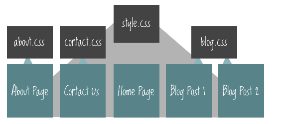

An amazingly HUGE thank you to Shay Howe for explaining how to include pages. Tho I still need to learn the concept of how to structure a page in HTML5.
Next up how to apply a) the css style to the second page and
b) how to apply a different css style to the second page.
But first I seem to have forgotten the most common basic thing like defining the meta charset. So let's do this before linking to the main.css.
Tadaaa I managed to apply the same style but don't really like it. So let's try and change it as this pretty pic from css-tricks.com shows it.  INTERESTING! Only now after I created new css style did it take my actual font on first page. Need to investigate why ... Only thing I deleted was cursive? Hmmm. Anyways, but at least it's applying the different css. Need to include most important style code as last row. So when scanning the code it takes the style.css first to apply and then check how_to.css to apply individual styles. Also still trying to figure out why big back butts ehm box is there and how to get rid of it. I'll just keep playing with the code ;) But for now I'm really eager to try out the Android logo hehe.
Ok, ok before moving on to the logo I should include another < nav> on 2nd page. And applying a bit of structure by using < header>.
Eventually check out how to make the logo change with JS